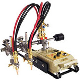

Доставка

Доставка уже обработанного, нарезанного металла выгодна по многим параметрам:
- Сокращение затрат на транспортировку металла;
- Сокращение площадей под складирование металла;
- Отсутствие дополнительных расходов на содержание и обслуживание металлообрабатывающей техники;
- Возможность использования квалифицированных работников.
Отдел продаж
Оформить заявку и получить информацию о наличии, стоимости металлопроката и услуг, условиях поставки, и пр. можно у специалистов отдела продаж по телефонам
+7 (3452) 520-670 (71, 72, 73, 74)

Предназначена для вырезки заготовок, раскроя листов и для других работ, связанных с разрезкой металла на несколько частей. Этим способом режут изделия из углеродистых низко- и среднелегированных сталей обычно толщиной от 1 мм до
Для газовой (кислородной) резки используется сварочная горелка со специальным устройством для подачи кислорода. Чистота режущего кислорода напрямую влияет на скорость и качество резки. По способу выполнения кислородную резку делят на ручную и машинную:
Ручная газовая резка
Универсальные ручные резаки К достоинствам данного метода резания можно отнести возможность реза любого вида сложности, толщину обрабатываемого металла (до 300 мм), а также невысокую стоимость эксплуатационных затрат (невысокую стоимость услуг). Недостаток — при толщине металла более 30 мм образуется широкая линия реза — до 3 мм. Качество реза невысокое — образуются неровные обгорелые края реза, что требует дополнительной механической обработки. Технические характеристики
|
Машинная газовая резка Переносная газорезательная машина используется для машиной резки газом Машина CG-100 II предназначена для прямолинейных резов листового металла толщиной от 5 до 300 мм, а также для вырезания кругов, нарезания фаски, в том числе Увеличению возможностей машины CG-100 служит компактная конструкция, лёгкая и безопасная работа с короткими перерывами. Резка рекомендована для использования в индустриях корабельной, мостовой и тяжёлого машиностроения, поскольку машиной CG-100 выполняются работы по резке металла различных размеров, а качество (прямолинейность, чистота) реза значительно выше, чем при ручной резке газом. Технические характеристики
|

Ознакомиться с возможностями применения оборудования и ценами на услуги вы можете с помощью прайс-листа на услуги резки.
Скачать прайс-лист (217 Кб, doc)